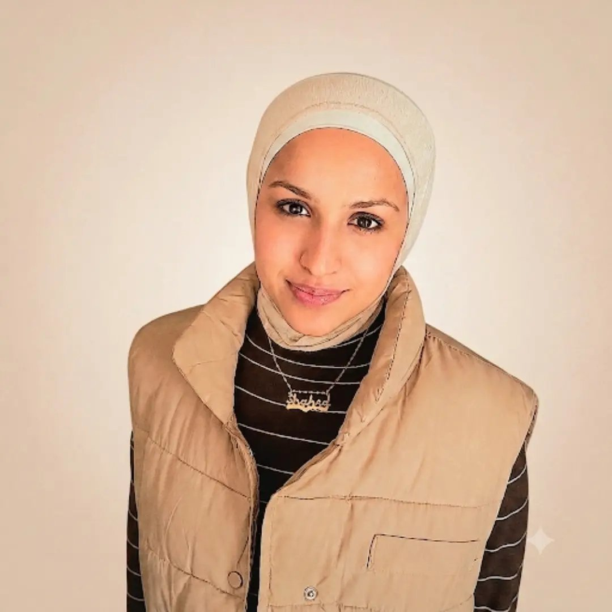

hybrid role that combines the organizational and planning skills of project management with the creative,
strategic execution of digital marketing and social media branding.

Shahed Alsabaa - Profile Photo
Skills
Technical: Python, Java, Tableau, Microsoft Office, DaVinci Resolve
organization: data analysis, graphic design, project management
Education
Year
University
Degree
2023 - 2028
Alaqsa
Bachelor's Degree in Smart Systems and Computer Engineering
2028 - 2030
Community College
Management and coordination
Experience
Academic Coordinator & Administrative Assistant 2026 | 3 months
Noon
• Coordinated academic activities and followed up with students to support attendance, communication,
and
day-to-day needs.
• Managed social-media organization, including content coordination and scheduling.
• Supported administrative operations and followed up on company financial records and related
processes.
Administrative Assistant Jan 2026 - Jul 2026
PediaLink
• Coordinated scheduling, email management, and data entry using Microsoft Office.
• Organized daily tasks and projects in a fast-paced environment while meeting deadlines.
Graphic Designer & Public Relations Specialist Nov 2025 - Jan 2026
Youth Hope Maker Foundation (YHMF)
• Created promotional and digital visual content and helped strengthen the organization's online
presence.
• Collaborated on engaging content and maintained relationships with stakeholders and media contacts.
Graphic Designer Nov 2026 - Dec 2026
Sutoor Initiative
• Created visual content, logos, branding materials, and design guidelines aligned with organizational
goals.
Art Workshop Facilitator Nov 2026 - Dec 2026
Art Initiative, with Artist Mohand Al-Sayes
• Delivered interactive art workshops and lesson plans for children, promoting creativity and
self-expression.